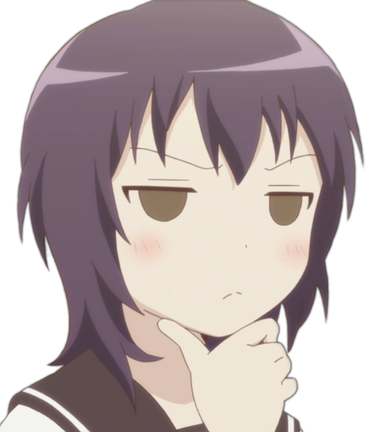

С чего начать смотреть аниме?
|  | На самом деле здесь нет ничего сложного. Не требуется никаких материальных вложений(разве что интернет, способный потянуть просмотр аниме). Это дело не сложное и не обязывает ни к чему, разве что уважайте других анимешников, и будет вам счастье. |
Ещё вам надо запомнить пару простых вещей:
1)Аниме - не китайские порно мультики, как называют их многие взрослые. Во-первых, не китайские, а японские, а во-вторых, к контенту для взрослых аниме не принадлежит. Есть, конечно аниме с ограничением 18+, но это связано с показом жестокости, крови и подобного. А к порнографии относится отдельный тип японской анимации, о котором я говорить не буду.
2) Постарайтесь относиться к аниме точно также, как к сериалам и фильмам. Ведь, по факту, так и есть. Аниме даже в кинотеатрах иногда показывают...
3) Третье и самое важное, все анимешники люди, такие же как и вы. Уважайте их выбор, ведь он точно так же может быть не согласен с вами в вашем выборе.
Некоторое время назад, если вы заяавили бы в обществе, что вы смотрите аниме, то вас могли спокойно побить, посчитав ненормальным или представителем нетрадиционной ориентации. Сейчас такого нет, а потому вы сможете спокойно наслаждаться просмотром.
под покравительством Dust Corp
Авчаров Даниил